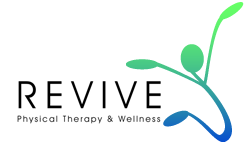
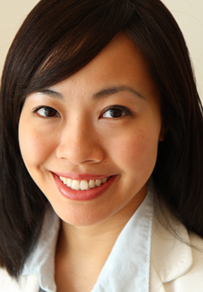
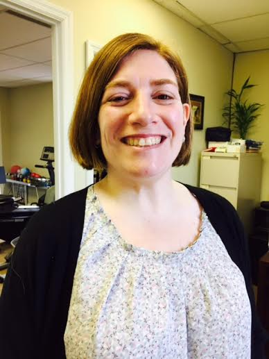

About Us
Revive Physical Therapy and Wellness Center is a boutique physical therapy clinic specializing in holistic, hands on healing. Acknowledging the balance of mind, body and spirit, our treatments combine Eastern and Western philosophies. Treatment focuses on the body as a whole, rather than just an injured body part. Our dedication to preserving and enhancing lifestyles includes incorporating the entire body in pain-free mobility, proper postural alignment, and balance in movement.
Our treatment modalities may seem similar to other clinics but how it is prescribed and the special way it is administered can make all the difference. In addition, pin pointing the root of the issue is crucial. Many people come in armed with a diagnosis from the doctor, but the root of the problem may stem from another pathology. For example, a pt with foot pain may have a nerve pinched from low back even though they do not complain of low back pain. We can find the root for you and resolve your issue immediately, especially if it is a straightforward dysfunction.

Diane Shiao PT, MSPT, DPT
Diane received her Bachelor’s of Science and Master's Degrees from a top-rated Physical Therapy program at Boston University's Sargent College. After several years of work experience in varied therapy settings, she returned to school and graduated with a Doctorate degree from New York’s Dominican College of Blauvelt. As an active member of the American Physical Therapy Association, Diane expands her knowledge base by frequently attending seminars approved by her professional organization.
Besides having an extensive academic knowledge in the field, Diane is well trained by her father, a Master Practitioner, in the science & art of Chinese Acupressure. Following her father’s footsteps, Diane has been touted to have “magical hands” as a “miracle worker”. Diane is also a Reiki III Practitioner. With both practices dealing with Qi or life’s force energy, Diane treats not only with anatomical knowledge but also with energy flow in mind and body.
Diane enjoys treating clients of all ages from the adolescent to the elderly. She has a knack for motivating seniors in balance and coordination training but can also challenge the highest-level of athletes. With a background in competitive dancing (ballet, tap, lyrical, & jazz), Diane easily learned Yoga and Pilates for rehabilitation and often incorporates dance therapy into her practice. With such a repertoire of skills, every client finds Diane adaptable in personalizing an effective treatment program for them.
Currently, Diane is loving her work with scoliotic clients from all age ranges using primarily the Schroth Scoliosis Therapy method. After receiving her certification through Hunter College in 2013 & a follow- up Advanced Scroth Course she has seen fantastic results with this method of treatment

Diane Shiao PT, MSPT, DPT
Ilene Rosenthal-Schulman, D.P.T.
Ilene Rosenthal-Schulman, D.P.T. graduated from Seton Hall University with a Doctorate in Physical Therapy. She also received a BA in Economics from Barnard College at Columbia University. Ilene has worked in both in-patient hospital settings and in out-patient rehabilitation facilities. She has seen a broad spectrum of patients, providing care in sub-acute rehabilitation, acute care, outpatient orthopedics and notably, the Pelvic Floor / Womens’ Health specialty. Ilene developed a gentle, delicate touch to her treatment style while also being discreet and compassionate with her patients. Ilene believes that quality Physical Therapy intervention requires the therapist to constantly reassess and adapt the treatment regimen to meet the individual needs of a patient. She also believes that it is important for a patient to be an active participant in their own care. Where appropriate, she uses tools and techniques in treatments, such as soft tissue mobilization, therapeutic exercise, neuromuscular reeducation, balance training, electric stimulation or ultrasound. It is important to Ilene that a patient achieves their own personal goals during Physical Therapy intervention, whether that means pain reduction or elimination, sleeping through the night, driving a car again, being able to pick up their child or get back to work. In her spare time, Ilene spends time with her husband and two teenage children. She enjoys cooking, reading, hiking, quilting, and spending time with her friends and family.
Ilene Rosenthal-Schulman, D.P.T.

- 1941 Oak Tree Rd. Suite #302, Edison, NJ 08820
- P: 732.662.7927
- F: 732.662.7928
-
 info@revivephysicaltherapy.com
info@revivephysicaltherapy.com